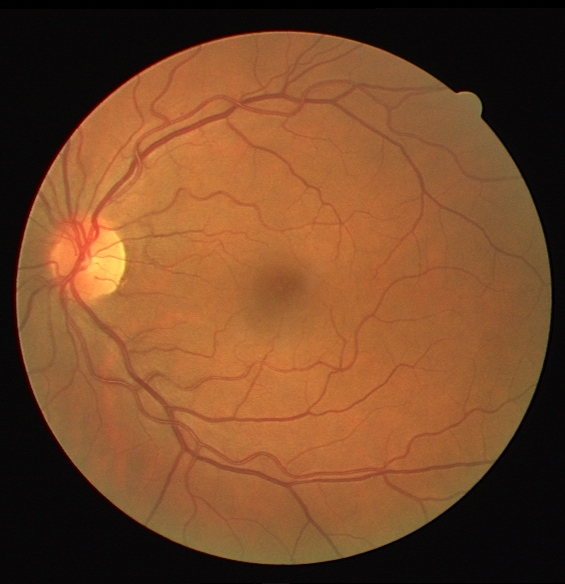
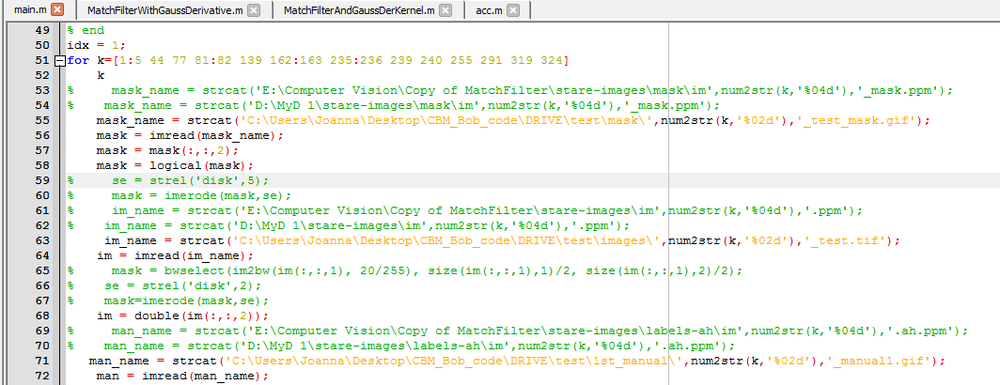
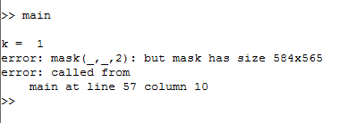

Trainable COSFIRE filters for vessel delineation with application to retinal images
Na ostatnim laboratorium zajęłyśmy się punktem c-"Run and test reference methods for vessel extractions: (a) matched
filters,(b)
first-order derivative of the Gaussian
(c) Matched Filter with First-Order Derivative of Gaussian function".
Filtry dopasowane są filtrami:
- liniowymi- system liniowy spełnia zasadę superpozycji (odpowiedź systemu na sumę sygnałów wejściowych jest równa sumie odpowiedzi systemu
na poszczególne sygnały składowe).
- stacjonarnymi- system jest stacjonarny, gdy jego właściwości nie są zależne od czasu
- przyczynowymi- system jest przyczynowy, jeśli jego sygnał wyjściowy w danej chwili zależny jest od sygnału wejściowego w tej chwili i/lub sygnału wejściowego
z chwil przeszłych.[2]
Filtr, dzięki któremu można uzyskać maksymalną możliwą wartość stosunku sygnału do szumu dla sygnału zakłóconego białym szumem gaussowskim
nazywa się filtrem dopasowanym do sygnału użytecznego (deterministycznego- s[n])
Odpowiedź impulsowa takiego filtru spełnia warunek: h[n] = s*[P − n] n-czas trwania sygnału, n= 0,1,2...P,
*-operator sprzężenia
czyli inaczej: odpowiedź impulsowa to sygnał wzorcowy opóźniony o P.[1]
Filtracja z wykorzystaniem pierwszej pochodnej funkcji Gaussa
Funkcja Gaussa jest wykorzystywana na różny sposób: definiuje rozkład prawdopodobieństwa dla szumu, stanowi operator wygładzania, wykorzystywana jest w
matematyce.
Filtr Gaussa jest filtrem "wygładzającym" do wykrywania krawędzi. W przetwarzaniu obrazów wykorzystywana jest dyskretna wersja funkcji Gaussa jako odpowiedź
impulsowa filtru. Jeśli dyskretny obraz jest tworzony przez próbki obrazu ciągłego, następuje zjawisko interpolacji. Interpolacja może być wyrażona jako
splot. Splata się filtr Gaussa z obrazem. Dla wyższych pochodnych funkcji Gaussa kernele (jądro splotu) są coraz bardziej podobne.
Do obliczenia podobieństwa wykorzystuje się korelację.
Filtrowanie Gaussowskie służy do usuwania szumów i szczegółów z obrazu.
Filtr Gaussa można traktować jako filtr dolnoprzepustowy. Centralne piksele obrazu mają większą wagę niż te na obrzeżach.
Stosowanie filtru Gaussa może oznaczać niezachowanie jasności obrazu.[3]
Kod do wykonania zadania pobrałyśmy ze
strony.
Wcześniej jednak pobrałyśmy
bazę obrazów siatkówki, której również używali autorzy kodu, z którego korzystałyśmy w trakcie laboratorium.
Przykładowe zdjęcia, które znalazałyśmy w bazie:



Następnie próbowałyśmy uruchomić funkcję "main". Zakomentowałyśmy linie: 54,62,70 oraz odkomentowłyśmy linie 55,63,71-ustawiając jednocześnie odpowiednie ścieżki,
jednak zaczeły wyskakiwać nam błędy, których nie udało nam się usunąć i w rezultacie nie udało nam się wykonać zadania.

